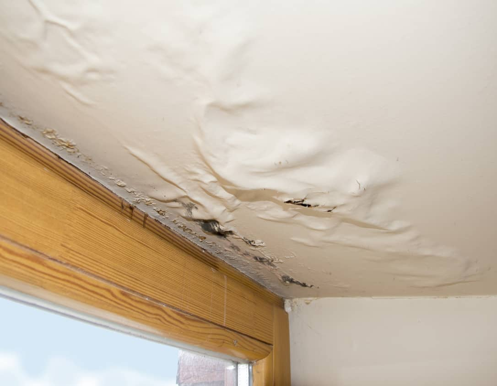
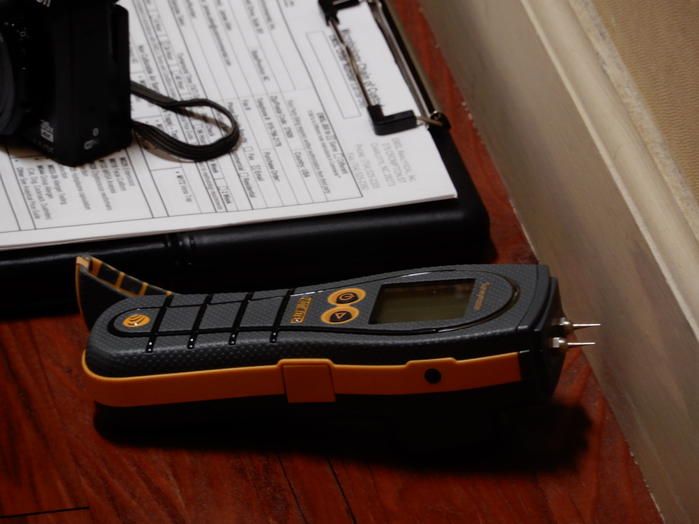

Understand the History
When did the condition first appear? Is it constant or intermittent? Does it correspond with rain, HVAC operation, plumbing use, seasonal changes, or another event?
Moisture Investigations
A stain on a ceiling. Damp flooring. Discoloration along a wall. Moisture appearing after heavy rain.
What you see may be only one part of the story.
Water can travel through building assemblies, along structural components, around penetrations, and through porous materials before becoming visible somewhere else.
A moisture investigation looks beyond the visible condition—using observations, measurements, building characteristics, and moisture patterns to help understand where the water may be coming from, how it may be moving, and what materials appear to have been affected.

Start With What You Can See
Water intrusion often becomes noticeable at the point where it finally reaches a visible surface.
That doesn't mean the water originated there.
A ceiling stain may be related to conditions several feet away. Moisture along a wall may originate above, below, outside, or within the wall assembly itself. Damp flooring may reflect a plumbing condition, exterior intrusion, condensation, or another moisture pathway.
That's why IES begins with the pattern, not simply the wet spot.
The wet spot isn't always where the water is intruding.
Not sure where the water is coming from?
You don't need to diagnose the problem before contacting. Describe what you've observed, when it appears, and anything you know about the building or recent events.
Those details provide somewhere to begin.
The IES Approach
A moisture investigation combines what can be seen with what can be measured—and considers both in the context of how the building is constructed and operating.
When did the condition first appear? Is it constant or intermittent? Does it correspond with rain, HVAC operation, plumbing use, seasonal changes, or another event?
Evaluate visible staining, deterioration, material changes, exterior conditions, penetrations, building assemblies, and other clues that may help explain the moisture pattern.
Moisture measurements can help identify differences between affected and surrounding materials and better define the extent and pattern of the condition.
Observations, measurements, building construction, and available history are considered together to evaluate potential pathways and determine what explanation the evidence best supports.
What May Be Evaluated
Depending on the building and concern, an investigation may consider:
Roofing components, transitions, penetrations, flashing, drainage, and other observable conditions that may provide a pathway for water.
Windows, doors, wall penetrations, joints, transitions, cladding, and other accessible components of the building envelope.
Supply lines, drains, fixtures, equipment, and surrounding materials when plumbing is a potential contributor.
Cooling equipment, condensate management, ductwork, temperature differences, and other conditions that may contribute to condensation or moisture accumulation.
Walls, ceilings, flooring, cabinetry, and other materials evaluated for moisture patterns or evidence of water exposure.
Roof drainage, grading, surface water, and other observable exterior conditions that may influence moisture at the building.
Foundations, slabs, basements, crawlspaces, and other accessible areas where ground or subsurface moisture may influence building materials.
Past leaks, renovations, repairs, storms, plumbing events, or other history that may help explain what we're seeing today.
Every building tells a different story. The appropriate investigation depends on the construction, the observed condition, and the question that needs to be answered.

Moisture Measurements
Moisture meters can provide useful information about materials that may not appear visibly wet.
But an individual reading doesn't tell the whole story.
Measurements are most useful when considered alongside the material being evaluated, surrounding measurements, visible conditions, building construction, and the circumstances of the investigation.
Used in that context, moisture measurements can help identify differences between materials, characterize a moisture pattern, and better understand how far an apparent condition may extend.
A meter does not, by itself, tell where the water came from.
Measurement helps define the condition. Investigation helps explain it.
Following the Evidence
Observe
Staining, deterioration, material changes, active moisture, and other observations establish where the investigation begins.
Compare
Measurements in adjacent or apparently unaffected areas can provide useful context and help establish the pattern.
Trace
Building assemblies, penetrations, transitions, plumbing, roofing, drainage, and other potential pathways are considered.
Verify
The moisture pattern should make sense in relation to the building, its construction, and the conditions observed.
Document
Relevant conditions, locations, measurements, and the apparent extent of affected materials within the evaluated area are documented.
Finding moisture is one part of the investigation. Understanding the pathway is what makes the finding useful.
When Water Isn't Coming Through a Leak
Moisture can also develop because of condensation.
When moisture in the air encounters a cool surface, condensation may occur in some circumstances within building materials.
Indoor humidity, surface temperature, insulation, air movement, HVAC operation, and outdoor conditions can all influence whether condensation develops.
That's why an investigation shouldn't begin by assuming water must be entering through a failed roof, pipe, or exterior wall.
Sometimes the pathway is liquid water. Sometimes it's water vapor.
Moisture & Microbial Growth
Persistent or repeated moisture can create conditions that support microbial growth and contribute to deterioration of building materials.
When visible or suspected microbial growth becomes part of the concern, additional evaluation or targeted sampling may be appropriate depending on the conditions and purpose of the investigation.
But finding moisture does not automatically establish that microbial growth is present.
And identifying microbial growth doesn't eliminate the need to understand the moisture condition that allowed it to develop.
Addressing growth without addressing moisture leaves the underlying question unanswered.Learn about Mold Investigations →
What You Receive
Depending on the scope, an IES moisture investigation may include:
The reported condition, areas evaluated, relevant history, and purpose of the investigation.
Visible staining, deterioration, active moisture, material changes, and other relevant field observations.
Measurements used to help characterize moisture patterns and compare affected and surrounding materials.
Images showing relevant conditions, locations, and potential pathways.
An explanation of conditions that may be contributing to the observed moisture pattern and what the available evidence supports.
Practical next steps, which may include repair, additional specialty evaluation, drying, material removal, monitoring, or other actions appropriate to the findings.
When a Moisture Investigation May Be Useful
Discoloration appears, but the source isn't immediately apparent.
Flooring feels damp, changes appearance, buckles, separates, or shows other signs of moisture exposure.
Conditions appear or worsen during or after precipitation.
A condition returns despite previous repairs or drying.
Building equipment, piping, or condensate may be contributing to the observed condition.
Moisture appears on cool surfaces, windows, ductwork, or other building components.
A space raises questions even though no obvious water source is visible.
Understanding the apparent moisture source and affected area can help inform the work that follows.
An Important Distinction
A moisture investigation can identify patterns and conditions that support a likely moisture source or pathway.
But buildings aren't transparent.
Concealed construction, inaccessible areas, previous repairs, weather, and changing building operations can limit what can be observed during an assessment.
In some cases, additional investigation such as evaluating plumbing or roofing systems, or other appropriate specialty may be necessary to confirm a suspected source.
Being clear about those limitations is part of a good investigation.
The findings should say what the evidence supports and no more.
After the Investigation
Finding a wet material doesn't necessarily tell us why it's wet.
And drying or replacing affected materials without addressing the contributing moisture condition may allow the problem to return.
A useful investigation connects:
Don't just document where the water ended up.
Understand how it got there.
Describe what you've observed, where it's occurring, when you first noticed it, and anything you know about recent leaks, storms, repairs, plumbing issues, or building changes.
Then together we can determine an appropriate next step.
Request a ConsultationNorth Carolina and Beyond
Continue Learning
How water intrusion, condensation, building materials, and environmental conditions can create moisture patterns—and why finding the source matters.